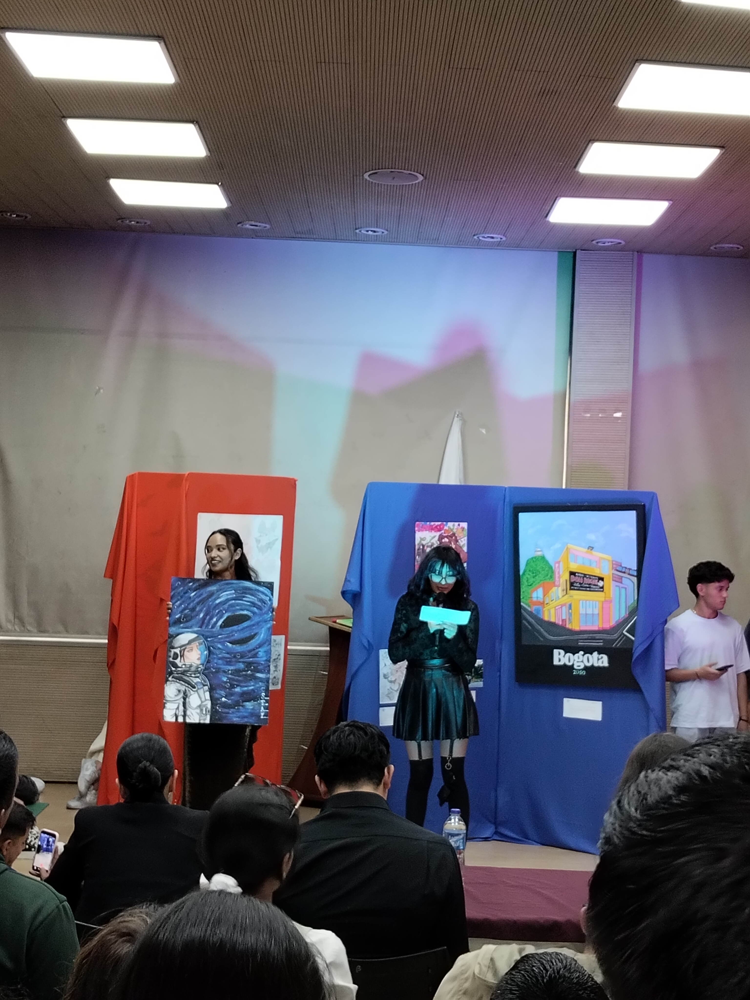
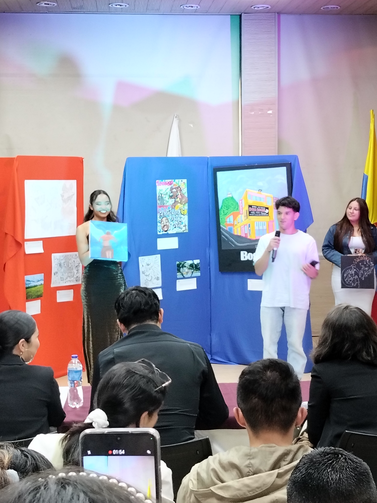

El arte visual dijo más que mil palabras
En la categoría de artes visuales, los estudiantes llevaron al escenario meses de trabajo, creatividad y dedicación plasmados en papel, lienzo y pantalla. Cada obra fue presentada por su autor, quien explicó al jurado y al público la historia detrás de su creación, las técnicas utilizadas y el mensaje que quería transmitir. Desde retratos clásicos hasta visiones futuristas de la ciudad de Bogotá, la muestra evidenció la riqueza artística que habita en el programa.

Dos participantes presentan sus piezas ante el público: una impactante ilustración de un astronauta frente a un agujero negro y la propuesta de diseño urbano "Bogotá 2050", que imaginó la ciudad desde una perspectiva futurista y colorida.

Los paneles decorados en rojo y azul sirvieron de galería temporal para exponer los trabajos. Cada participante presentó su obra con seguridad, describiendo el proceso creativo y las técnicas empleadas para lograr el resultado final.

Una vista general de los paneles de exposición revela la variedad de estilos y técnicas presentes: desde el dibujo a lápiz más detallado hasta la pintura de gran formato, pasando por ilustraciones digitales impresas con alta calidad.
Los trabajos revelaron una extraordinaria diversidad de técnicas y visiones. La pintura acrílica, el lápiz de grafito, la tinta china y el diseño especulativo convivieron en el mismo escenario, mostrando que cada artista tiene una voz propia y una forma particular de ver y representar el mundo.
La propuesta "Bogotá 2050" fue especialmente llamativa: con colores vibrantes y una composición llena de detalles, su autor imaginó una versión futura de la capital colombiana que combinaba arquitectura moderna, naturaleza y cultura urbana. Una obra que invitó a soñar con el futuro de la ciudad desde los ojos y el corazón de un joven bogotano.
"Cada trazo contaba una historia distinta — desde el espacio exterior hasta la Bogotá que soñamos para el futuro."